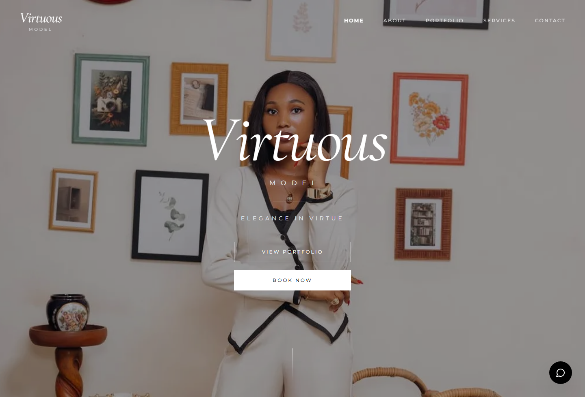
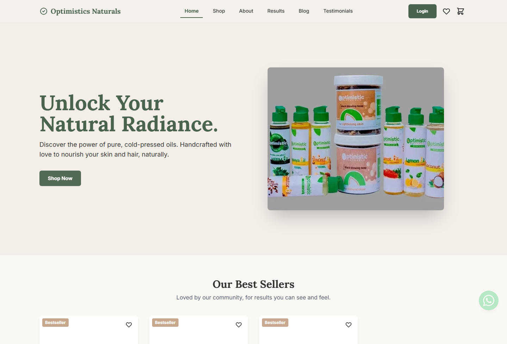
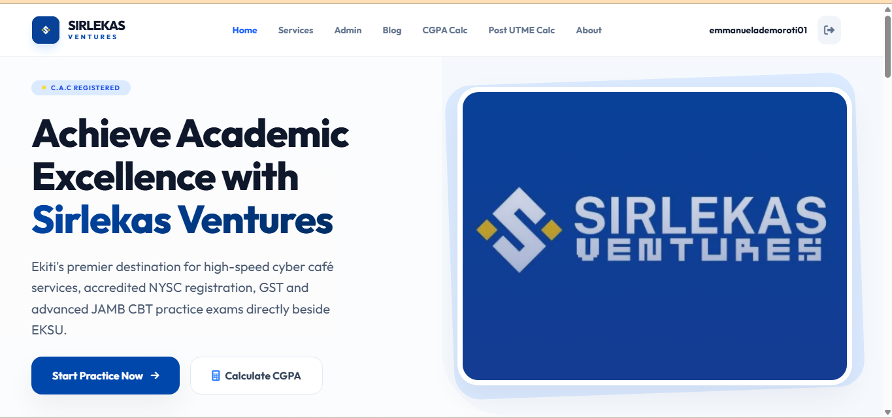
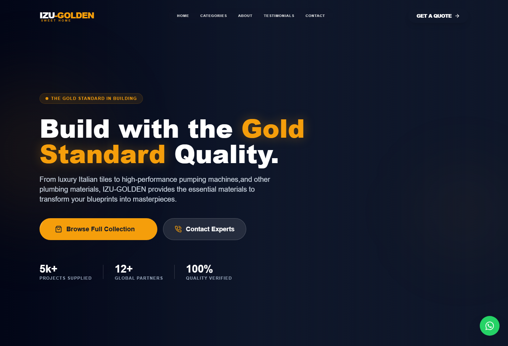

Every featured project has a live Vercel URL that can be opened and reviewed.
Full-Stack Developer | React | Node.js | Firebase
Building complete web experiences, from responsive interfaces to reliable backends.
I am a full-stack developer based in Lagos, Nigeria. I build responsive web experiences for brands and businesses, connecting polished React interfaces with backend services, APIs, authentication, databases, and CMS workflows.
Projects include admin dashboards, persistent content, and Firebase-backed management flows.
Projects cover healthcare, modeling, natural products, digital services, and supplies.
Live Work
Projects built for actual use, not just screenshots.
These projects show responsive frontend implementation alongside deployed, data-backed content systems and admin workflows. The strongest proof is that the links are live.

Virtuous ModelModeling Portfolio
CMS/admin dashboardVisual portfolio for a professional model.
A brand-led portfolio experience for editorial, runway, and commercial modeling work, designed around visual presentation and easy content updates.
- Built responsive pages for portfolio browsing across desktop and mobile.
- Added admin dashboard support for managing portfolio content.
- Used refined typography and image-focused layout to support the model's brand.
React
Firebase/CMS
Responsive UI
Vercel
Open live project

Optimistics NaturalsNatural Products Website
CMS/admin dashboardProduct and brand website for a natural care business.
A soft, product-focused site that presents brand story, product information, navigation, and content sections in a clean responsive layout.
- Created responsive brand and product sections for clear browsing.
- Included admin dashboard support for content updates.
- Structured the UI to feel calm, readable, and product-friendly.
React
Tailwind
CMS workflow
Vercel
Open live project

Sirlekas VenturesDigital Services / CBT Website
CMS/admin dashboardService website for cyber cafe, CBT, registration, and printing.
A service-heavy business website for Sirlekas Ventures near EKSU, built to communicate services, location, business credibility, and search-friendly details.
- Built service sections for CBT practice, NYSC registration, printing, and graphics.
- Added SEO-focused metadata and structured business information.
- Included admin dashboard support for managing content after deployment.
React
Firebase
SEO
Vercel
Open live project

IZU-GOLDBusiness Website
Responsive business siteBuilding materials and plumbing supplies website.
A product-oriented business website for premium building materials and plumbing supplies, focused on credibility, product categories, and contact paths.
- Structured product and business information for quick customer scanning.
- Built a responsive site experience for mobile and desktop visitors.
- Used clear CTAs and layout hierarchy to support business enquiries.
React
Business UI
Responsive Design
Vercel
Open live project
How I Work
Full-stack delivery with practical client thinking.
I build across the stack: accessible interfaces, application logic, data flows, content management, deployment, and thoughtful post-launch iteration.
Frontend UI
HTML, CSS, JavaScript, React, Bootstrap, Tailwind, responsive layout, and reusable sections.
CMS/Admin Dashboards
Content update flows for projects where clients need to manage pages, images, or business content.
Deployment
Vercel deployments, Git/GitHub workflow, hosting platforms, application debugging, and live project iteration.
Backend, APIs & Automation
Firebase, Node.js, Express.js, Python, Flask, authentication, APIs, LangChain, and LangGraph.
Process
From brief to live website.
Clarify the business, users, content, and main actions visitors should take.
Implement responsive interfaces, reusable components, APIs, data flows, and CMS workflows.
Deploy, review live behavior, fix rough edges, and prepare the project for sharing.
Contact
Need a full-stack developer who can ship complete web experiences?
I am open to full-stack developer roles, internships, and project-based work.